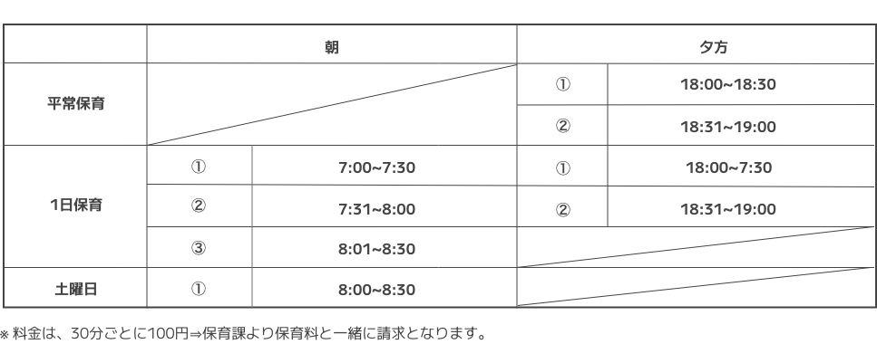
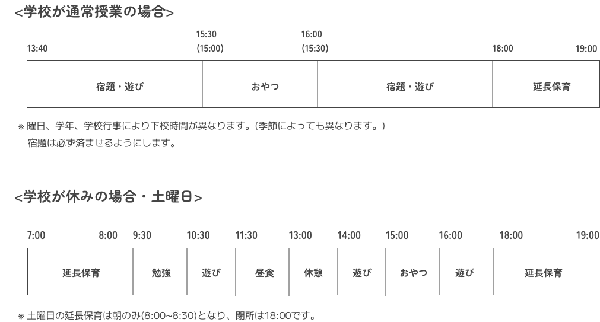
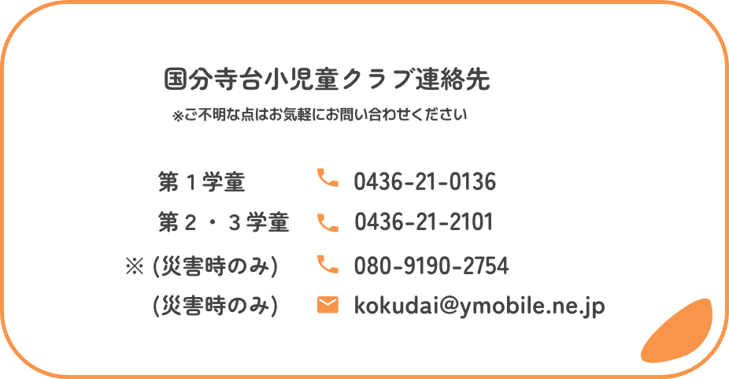

- 1. 保育時間
- 2.延長保育
-

- 3.休日について
- 日曜、祝日、年末年始(12/29~1/3)
- 4.土曜保育
-
① 当日の欠席や登所時間が遅くなる時は8:45までに連絡下さい。(1日保育の場合も)
② 健康観察カード、勉強道具、弁当、水筒を持たせて下さい。(1日保育の場合も) - 5.保育の流れ
-

-
① 着替え【上下一式】(季節の変わり目、身体の成長に合わせ、補充して下さい。)
- ・用意する着替えは子供と確認し、自分の服がわかるように記名して下さい。
- ・着替え時に下着がない場合は、学童でお貸ししますが、新品にてご返却願います。
- ・借りた着替えは洗濯の上ご返却ください。
-
②第３学童(家庭科室)で、上履きを各自ご用意ください。(サンダル不可)
- 1. 帰宅方法について
- 2. 欠席の場合
-
① 利用票提出後、変更になった欠席は、学童(電話またはFAX)と学校(連絡帳等で)、両方に連絡して下さい。
学校からの連絡は学童にはありませんので、予め双方にわかるようにしてください。
② 保育時間外は留守電になりますので、メッセージを残すか、FAXで送信ください。
③ 出席停止等で休んだ後、治癒証明書(コピー可)を、学童にも提出して下さい。 - 3. 宿題について
-
① 学校より帰ってきた時に「宿題をやるように」と声を掛けますが、ご家庭でも「学童でやってくるように」と話をして下さい。
② 帰宅しましたら、必ず宿題の確認をお願いします。
- ① 安全の為、送迎時は、必ず部屋まで来て下さい。
- ② 車でお迎えの時は、校内は徐行運転をお願いします。
- ③ 防犯の為、施錠をしています。カーテンも閉まっている場合は、インターホンを押して名前を言って下さい。
- ④ 学校に持参してはいけない物は、学童にも持たせないで下さい。
- ⑤ 持ち物には必ず名前を記入してください。(特に忘れ物の多い 傘、水筒、靴下、上着、帽子)
- ⑥ お迎えの時に、忘れ物がないか、親子で確認して下さい。
- ⑦ 間違えて友達の持ち物を持って帰ってしまった場合は、すぐに学童までご連絡ください。
- ⑧ 学童にもくることについて子どもと良く話し合いをして、納得をさせて下さい。
- 親の希望だけで来ることになると「自分は行きたくないのに」と周囲に迷惑がかかる事があります。 「学童に行かない子は下校後家に帰るのに、自分はどうして学童に行かなければならないのか」を 充分に話し合って納得させていただくよう、ご協力願います。
- ⑨ 児童クラブの時間内に起きた問題は、まず支援員に相談して下さい。
- 児童クラブの中だけでは解決できない問題は、学校にも相談の上、解決を図りたいと思います。
- ⑩ 勤務先や住所が変更になりましたら、変更届を必ず提出願います。勤務先変更の場合、就労証明書が必要となります。
- ⑪ 学童に登所し、忘れ物に気付いた場合は原則として学校に取りに行かれません。お迎えの時に保護者と一緒に取りに行ってください。
